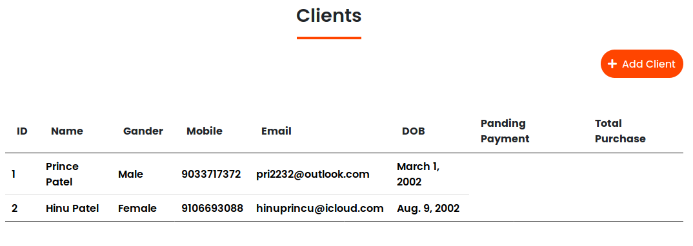
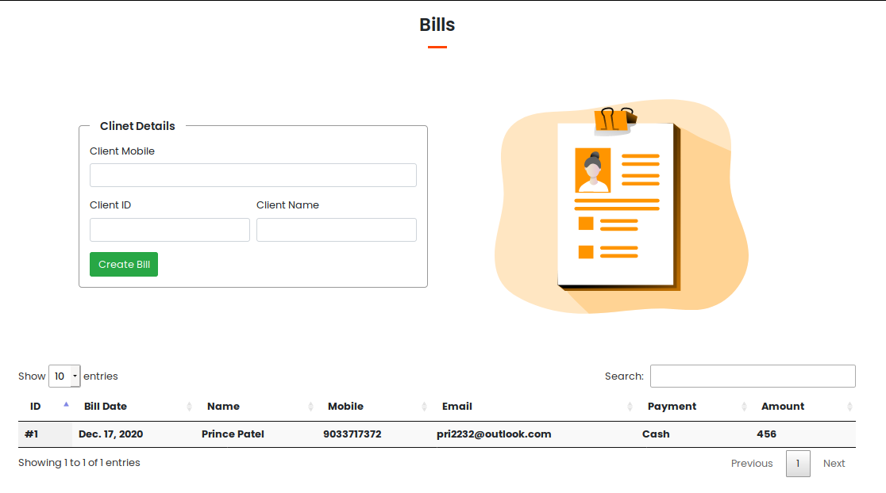
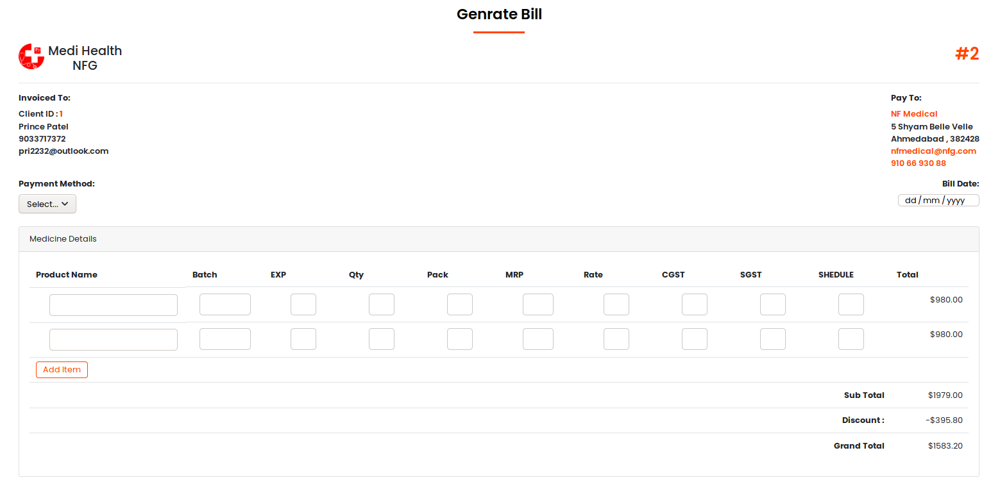

Date : 23/12/2020 | Time : 10:00
Author : Prince
Patel
Date : 23/12/2020 | Time : 10:00
Author : Prince
Patel
Medi Health NFG This is a software and website
that has been created using Python Django.
This software is used by running across local servers.Clients who want to access Online directly are hosted
on a digital platform.This is the software that will be converted to mobile app. But if there is a good
response from all the clients and people.

This software has been created for the Special Medical Department.All client data can be saved
with the help of this software.This software keeps all the information of the client who has taken any
medicine and when, who came to take it.
Each client's full name, mobile number, email, date of birth, gender, marital status, by whom they came to
medical, their address, city, state, pin code, if they have any disease.
So far the client keeps all the data on how much he has bought, how much money he has borrowed.

A bill is also made for the client. A bill life time is saved. When the client wants the bill,
it is converted into PDF.
The bill can also be sent to the client directly on WhatsApp, Telegram. The bill is sent to the client on an
automatic telegram when the bill is generated.
